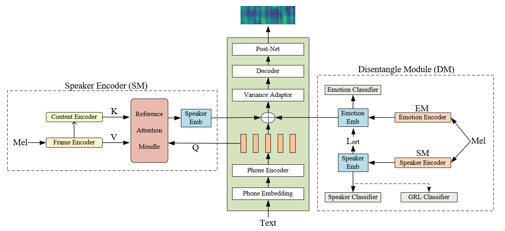

The purpose of the cross-speaker emotion transfer task in expressive speech synthesis is to synthesize target speaker speech while preserving the emotion of the source speaker.
However, it is important to note that during the emotion transfer, the source speaker's identity information may be transferred together,
which can influence the generated speech of the target speaker. In this study, we propose a new method for cross-speaker emotion transfer.
First, we use a speaker encoder combined with a reference attention module to obtain the fine-grained embedding representation of the target speaker. Meanwhile, we design a disentanglement module to learn emotion embedding independent of the speaker.
Specifically, this module decouples the emotional features from the speaker features, enabling synthesized speech to maintain the identity of the target speaker while expressing the emotions of the source speaker during the emotion transfer process.
Experimental results show that the proposed method outperforms the reference embedding-based method in terms of target speaker similarity and source speaker emotion similarity, and can achieve more accurate and natural synthesis of cross-speaker emotion transfer.

2. Subjective Evaluation
Emotion
Emotion reference audio
Target speaker reference audio
Fast2-GST
Fast2-VAE
Proposed
Amused
Text: The greeks used to imagine that it was a sign from the gods to foretell war or heavy rain
Angry
Text: The greeks used to imagine that it was a sign from the gods to foretell war or heavy rain
Disgust
Text: at the doorway he met mother hilda
Sleepiness
Text: God bless 'em, I hope I'll go on seeing them forever
Neutral
Text: at the doorway he met mother hilda
3. Ablation study
Emotion
Emotion reference audio
Target speaker reference audio
DM-cls-ort
DM-ort
Proposed
Amused
Text: The greeks used to imagine that it was a sign from the gods to foretell war or heavy rain
Angry
Text: The greeks used to imagine that it was a sign from the gods to foretell war or heavy rain
Disgust
Text: at the doorway he met mother hilda
Sleepiness
Text: God bless 'em, I hope I'll go on seeing them forever